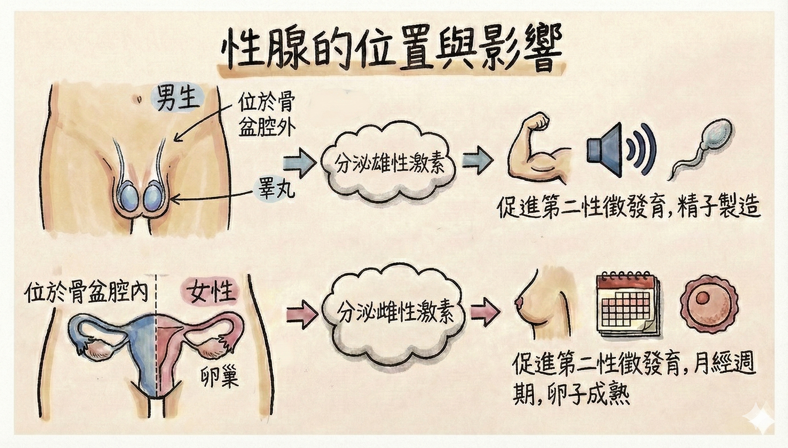
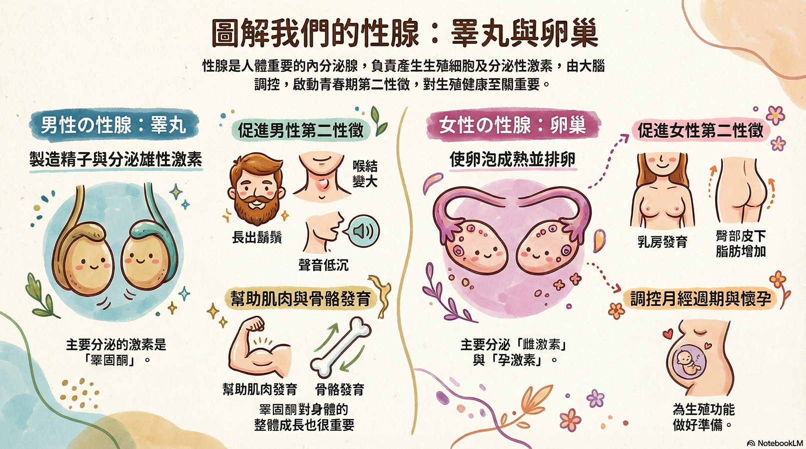

男性的 和女性的 ，可以產生 或 等生殖細胞，也是人體重要的 ，統稱為 （又稱 ）。
分泌 ，會影響男性 的表現，例如長出鬍鬚、喉結凸出、聲音變低沉等。 分泌 ，會影響女性 的表現，例如乳房發育及皮下脂肪增加等。

請觀看下列兩段影片，了解青春期與性腺、第二性徵的關係，並完成下方影片評量。
外源性荷爾蒙（體外補充的男性或女性荷爾蒙）可以持續影響我們已經發育完成的特徵，例如改變脂肪分佈、肌肉量。但有些改變是「單向」的，一旦發生就非常難以復原。根據 影片2 內容，影片中的人物可能因為外源性荷爾蒙的影響，展現了很多女性的特質，但也有些地方是無法呈現女性特質的，下列哪一種生理變化，最能展現這種「一旦發生，就很難再改變」的特性？
恭喜完成影片挑戰！這是補充圖解：

| 名詞 | 說明 |
|---|---|
| 睪丸 | |
| 卵巢 | |
| 性腺 |